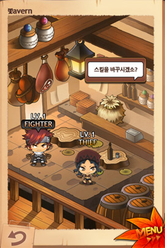
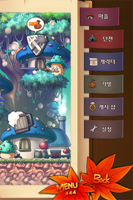
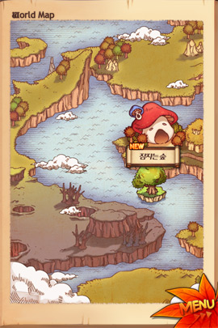
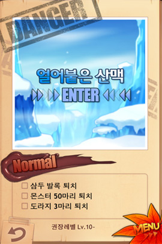
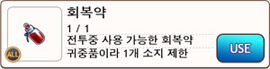
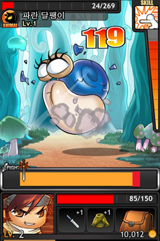
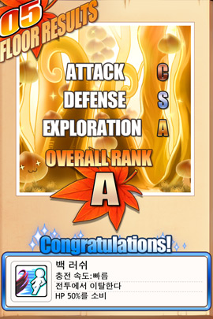
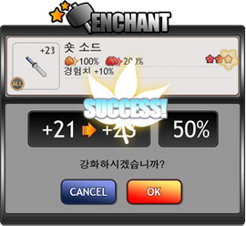
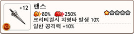
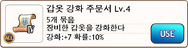

1. 마을
 마을은 모험을 위한 준비를 하는 곳입니다.
마을은 모험을 위한 준비를 하는 곳입니다.


2. 던젼
 마을에서 단풍잎 메뉴를 통해서 던젼에 들어갈 수 있습니다.
마을에서 단풍잎 메뉴를 통해서 던젼에 들어갈 수 있습니다.


3. 탐험

 던젼 안을 탐험하는 모드입니다.
던젼 안을 탐험하는 모드입니다.

 화면의 왼쪽 위에는 현재 몇층인지, 주변의 얼마나 가까운 곳에 몬스터가 있는지가 표시된답니다.
화면의 왼쪽 위에는 현재 몇층인지, 주변의 얼마나 가까운 곳에 몬스터가 있는지가 표시된답니다.
▪ 또한 탐험한 지역을 알려주는 미니맵도 보일거예요.
▪ 미니맵에서 노란색으로 빛나는 방에는 보물 상자가, 파란색으로 빛나는 방에는 다음 층으로 가는 길이 있어요.

 5층마다 등장하는 노란색 방 중에 하나에는 보물 상자 대신 마을에서 순간 이동을 할 수 있는 제단이 등장한답니다.
5층마다 등장하는 노란색 방 중에 하나에는 보물 상자 대신 마을에서 순간 이동을 할 수 있는 제단이 등장한답니다.
▪ 찾아낼 때마다 순간 이동을 할 수 있는 마법의 돌을 구할 수 있으니 다시 던젼의 처음부터 돌아오는게 싫다면 5층마다 꼭 찾아보시길 권해요.

 왼쪽 아래의 얼굴을 누르면 현재의 능력치나 스킬을 확인할 수 있답니다.
왼쪽 아래의 얼굴을 누르면 현재의 능력치나 스킬을 확인할 수 있답니다.
 오른쪽 아래의 가방은 장비의 변경이나 아이템 사용 등이 가능하고요.
오른쪽 아래의 가방은 장비의 변경이나 아이템 사용 등이 가능하고요.

4. 전투

 탐험중에 적과 마주치게 되면 전투가 시작됩니다.
탐험중에 적과 마주치게 되면 전투가 시작됩니다.

 오른쪽 위에 보이는 것은 장비하고 있는 스킬입니다.
오른쪽 위에 보이는 것은 장비하고 있는 스킬입니다.
▪ 전투에서 공격을 주고 받으면 스킬이 서서히 충전될 거예요.
▪ 충전이 완료된 스킬을 사용하여 전투를 유리하게 이끌어보세요.
 전투 중에도 가방을 열 수 있어요.
전투 중에도 가방을 열 수 있어요.
▪ 하지만 급박한 상황이기 때문에 장비를 변경하거나 아이템을 사용하면, 공격 기회를 놓치게 되고 적의 공격은 각오해야 한답니다.
▪ 그리고 느긋하게 음식을 먹을 여유도 없기 때문에 전투 중에는 사용할 수 있는 아이템에 제한도 있답니다.
5. 평가

 던젼을 한층 통과할 때마다 얼마나 멋진 모험을 했는지 평가되어 보상이 주어진답니다.
던젼을 한층 통과할 때마다 얼마나 멋진 모험을 했는지 평가되어 보상이 주어진답니다.

 공격 평가는 공격이 빗나가지 않고 정확히 명중할 수록 점수가 높아지죠.
공격 평가는 공격이 빗나가지 않고 정확히 명중할 수록 점수가 높아지죠.
▪ 당연히 크리티컬이 명중하면 더욱 높은 평가를 받을 수 있답니다!

 방어 평가는 그 층에서 얼마나 많은 피해를 받았냐가 기준이예요.
방어 평가는 그 층에서 얼마나 많은 피해를 받았냐가 기준이예요.
▪ 그래서 음식이나 물약을 먹을때마다 평가가 낮아지죠.
▪ 위험하더라도 꾹 참으면 좋은 평가를 받을 수 있지만 그러다가 쓰러지기라도 하면 큰일이겠죠?

 마지막으로 탐험 평가는 그 층을 빠르게 통과할 수록 높아진답니다.
마지막으로 탐험 평가는 그 층을 빠르게 통과할 수록 높아진답니다.
▪ 하지만 조심해야 할 점이 보물 상자를 내버려두고 갈길만 서두르면 오히려 평가가 낮아진다는 거예요.
▪ 가능한 많은 보물 상자를 찾아내면서 빠르게 다음층으로 내려가야 한답니다.
6. 스킬
 스킬에 대해서 조금 부연 설명을 드릴게요.
스킬에 대해서 조금 부연 설명을 드릴게요.
 스킬에는 두가지 종류가 있답니다. 우선 첫번 째는 자동 발동 스킬이에요.
스킬에는 두가지 종류가 있답니다. 우선 첫번 째는 자동 발동 스킬이에요.

▪ 자동 발동 스킬은 5레벨마다 배울 수가 있어요.
▪ 한번 배우면 효과가 언제나 적용되기 때문에 모험에 매우 큰 도움이 된답니다.
▪ 효과가 약한 것처럼 보여도 다음에는 더 강한 스킬을 배울 수 있기 때문에 점점 강해질 수도 있죠.
▪ 어떤 스킬이 자신에게 필요할지 잘 고민해보세요.
▪ 하나의 스킬을 우선 한계까지 강화시킬지, 여러가지 스킬을 골고루 배울지도 언제나 망설여진답니다.
 다른 하나는 전투에서 잠깐 언급했던 선택 발동 스킬이에요.
다른 하나는 전투에서 잠깐 언급했던 선택 발동 스킬이에요.

▪ 이 스킬은 장비처럼 장착해야만 사용이 가능하지만 아무데서나 변경할 수 없으며 주점에서만 가능하답니다.
▪ 그리고 처음에는 하나밖에 모르기 때문에 바꾸고 싶어도 바꿀 게 없어요...
▪ 새로운 스킬을 배우고 싶다면 레벨업만으로는 메울 수 없는 깊은 경험이 필요하기 때문에 강력한 보스 몬스터를 쓰러트려야 한답니다.
▪ 보스 몬스터를 처음 쓰러트릴 때 그 경험을 살려서 스킬을 배울 수 있어요.
▪ 그렇기 때문에 다른 캐릭터가 스킬을 배우고 싶다면 그 캐릭터로 다시 한번 보스를 쓰러트릴 필요가 있어요.
▪ 스킬에는 전투중이 아니라 탐험중에 사용 가능한 스킬도 있답니다.
7. 인챈트


